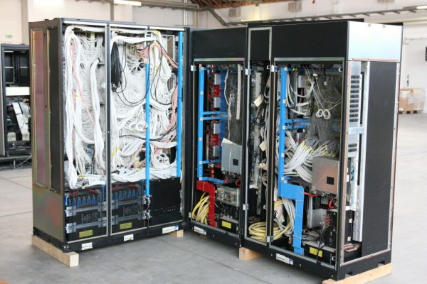

수업에서 배운 다음 날 프로젝트에 적용해 봅니다.
화면부터 서버, 배포까지 혼자 한 바퀴 돌려 본 기록을 모았습니다.
전공 수업에서 처음 만든 웹 페이지가 친구들 과제 제출 도우미가 됐을 때, "내가 만든 것을 남이 쓴다"는 감각을 처음 배웠습니다. 그 뒤로는 배우는 것마다 작게라도 만들어 세상에 내놓는 것을 원칙으로 삼고 있습니다.
부트캠프에서는 4인 팀의 백엔드를 맡아 기능 하나하나보다 "왜 이렇게 나누는가"를 묻는 버릇을 들였습니다. 모르는 것은 기록하고, 막힌 지점은 글로 남깁니다 — 아래 프로젝트 상세에 트러블슈팅까지 그대로 적어 두었습니다.

혼자서 한 바퀴 Docker · GitHub Actions · Nginx 커밋하면 서버에 올라가는 나만의 배포 파이프라인. ↗ 링크동아리 회계 담당이 바뀔 때마다 엑셀이 유실되는 문제에서 출발했습니다.
[역할] 회비 입출금 API 설계와 구현, 월별 정산 배치, EC2 배포를 맡았습니다.
[성과] 정산 화면을 여러 번 나눠 부르던 요청을 한 번으로 묶어 첫 화면이 끊김 없이 뜨게 했습니다. 학교 동아리 3곳이 실제로 씁니다.
[트러블슈팅] 월말 정산 때 같은 요청이 겹치면 잔액이 어긋나던 문제 — 정산 로직에 잠금을 걸어 한 번에 하나만 처리하게 해서 해결했습니다. 과정은 블로그에 정리해 두었습니다.
"배포는 어렵다"를 없애 보려고 만든 학습 프로젝트입니다. main에 커밋하면 테스트 → 이미지 빌드 → EC2 반영까지 자동으로 흐릅니다.
[역할] 파이프라인 전체 구성과 문서화.
[성과] 이후 모든 개인 프로젝트가 이 파이프라인 위에서 돕니다. 같은 과정 수강생 대상 세미나로 공유했습니다.
[트러블슈팅] 새 버전을 올릴 때 잠깐 접속이 끊기던 문제 — 컨테이너를 먼저 띄우고 Nginx가 가리키는 곳만 바꾸는 방식으로 무중단에 가깝게 만들었습니다.
자료구조·운영체제·데이터베이스. 4학년 캡스톤에서 교내 분실물 지도 서비스를 만들어 교내 창업 경진대회 장려상을 받았습니다.
Java·Spring Boot·React 6개월 과정. 팀 프로젝트 2회에서 모두 백엔드 리드를 맡아 API 설계와 배포를 담당했습니다.
과정과 병행해 기초를 증명할 수 있는 것부터 차례로 땄습니다.
개인 프로젝트를 매주 금요일에 배포합니다. 잘 안 된 것도 기록으로 남기고, 쓸 만한 것은 오픈소스로 정리합니다.